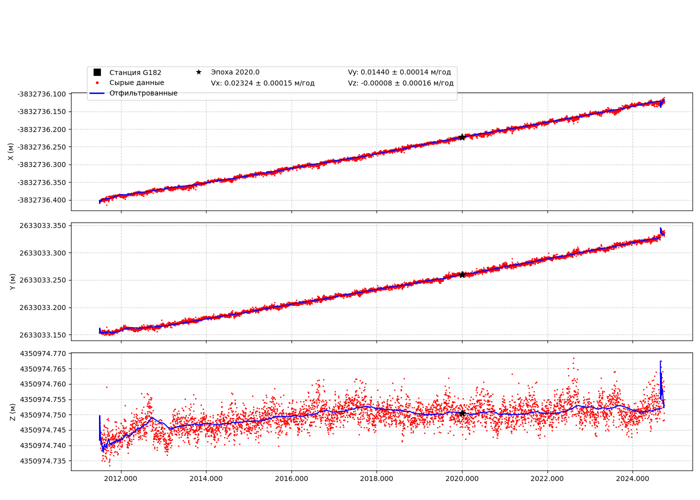

📍 Станция G182
Координаты (на эпоху 2020.0)
Широта: 44.092°
Долгота: 145.238°
Высота: 61.181 м
X_2020: -3672054.150
Y_2020: 3561520.505
Z_2020: 4422630.157
Файл txyz2
Скачать G182.txyz2
Графики координат XYZ

Интерактивный график координат
🔎 Открыть интерактивный график в новой вкладке